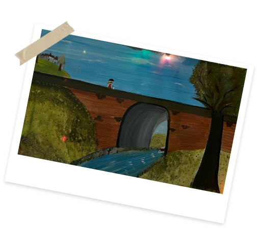

Wordt een
Administratief medewerker
Taakomschrijving:
Je bent verantwoordelijk voor de administratieve ondersteuning van het directieteam en je collega's, waaronder het afhandelen van juridische verplichtingen, het beheren van communicatie en het uitvoeren van diverse logistieke taken. Daarnaast coördineer je praktische zaken met vrijwilligers, zoals contracten, planning en communicatie.

.png)
Profiel:
- Diploma secundair onderwijs of bachelor
- Uitstekende beheersing van het Frans of Nederlands, en lees- en luistervaardigheid in de andere taal
- Goede mondelinge en schriftelijke communicatieve vaardigheden
- Vaardigheid in software en computertoepassingen
- Zelfstandig en in teamverband kunnen werken
- Sterk in organiseren en initiatief nemen
- Flexibel, discreet en nauwkeurig
- Open houding ten opzichte van onze doelgroep
Aanbod:
- Tewerkstelling in hartje Brussel tijdens de kantooruren
- Een warme werkomgeving met ervaren en gedreven collega’s
- Een deeltijds contract (19u) van onbepaalde duur
- Verloning volgens paritair subcomité 319.00 barema 5
- 100% terugbetaling woon- werkverkeer openbaar vervoer
- Maaltijdcheques
- Indiensttreding zo snel mogelijk
